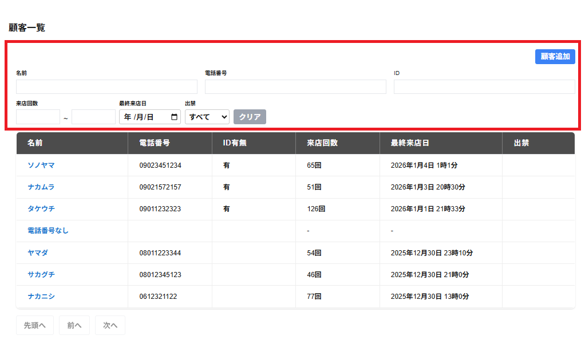

顧客一覧の画面には以下の項目が表示されます。
・名前
入力した文字が含まれる顧客が表示されます。
・電話番号
入力した文字が含まれる電話番号の顧客が表示されます。
・ID
入力した文字が含まれるIDの顧客が表示されます。
・来店回数
左側の欄に来店回数の下限の値を右側の欄に来店回数の上限の値を入力すると、入力した範囲の来店回数の顧客が表示されます。
・最終来店日
年/月/日をクリックし、最終来店日の年月日を選択すると、選択した年/月/日の最終来店日のみの顧客が表示されます。
・出禁のみ・出禁以外(セレクトボックス)
出禁のみ・出禁以外(セレクトボックス、初期値はすべて)をクリックすると、すべて・出禁のみ・出禁以外を選択できます。
すべてを選択した場合はすべての顧客が表示されます。
出禁のみを選択した場合は出禁の顧客が表示されます。
出禁以外を選択した場合は出禁以外の顧客が表示されます。
・クリア
名前、年/月/日、電話番号、ID、来店回数、キャスト名、出禁のみ・出禁以外(セレクトボックス)の絞込みをすべて解除できます。
・顧客追加
顧客追加を押すと顧客追加の画面が表示されます。
